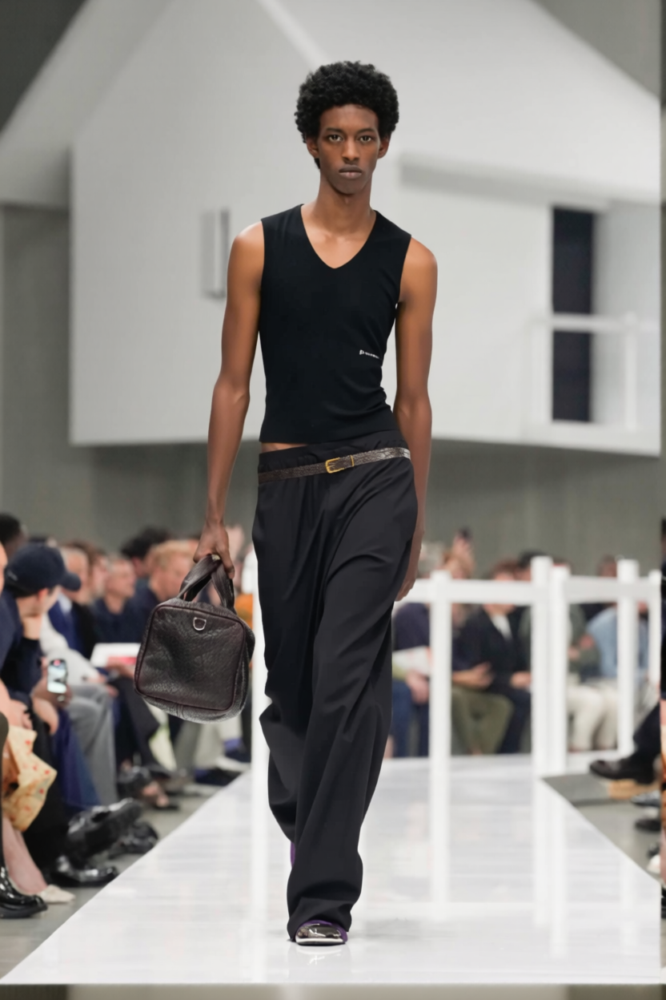
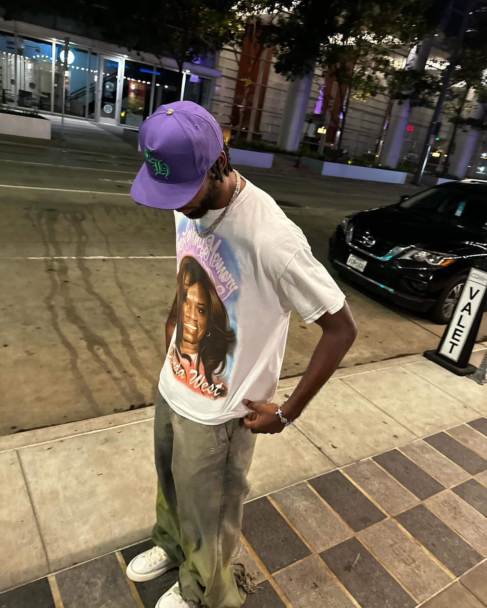
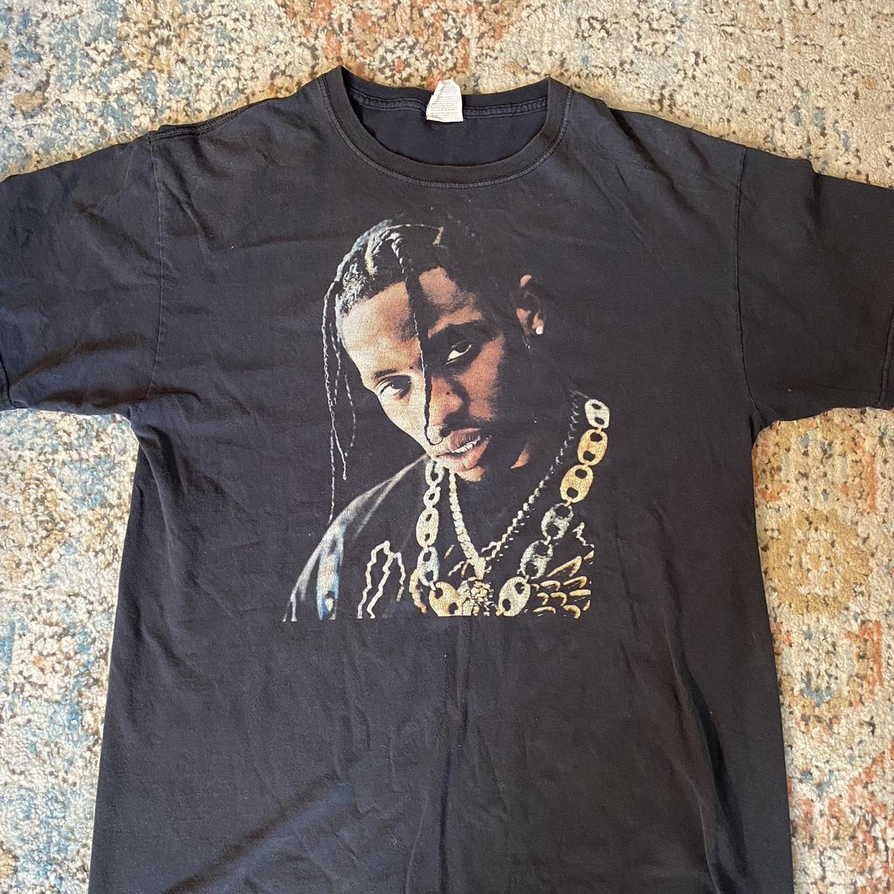
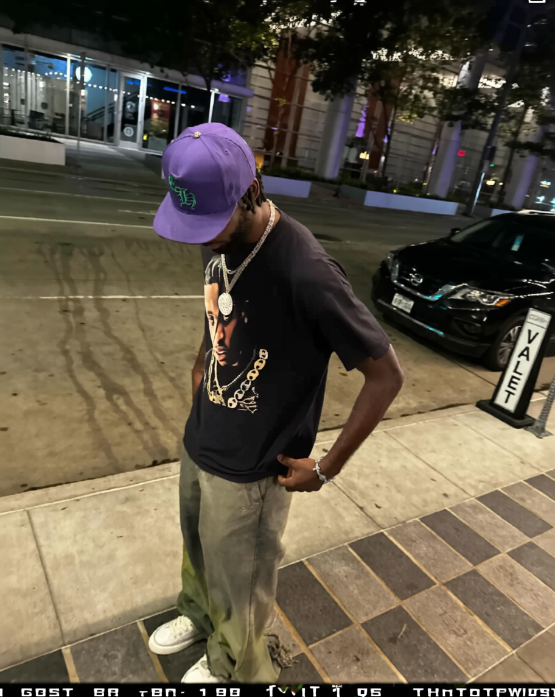

DRAPE — Browser-Based AI Virtual Try-On
Drop in a photo of a garment and a photo of a person, and DRAPE renders that person wearing it — keeping their face, body, pose, and background untouched. A pure static frontend driving a local AI pipeline over HTTP and WebSocket.

Virtual try-on tools usually cheat: they regenerate the whole image, and the person who comes out the other side has a different face, a different body, and a different pose than the one who went in. DRAPE doesn't. It masks only the clothing region on the real photo and repaints the garment into it — so identity, proportions, and background are preserved by construction, not by luck.
The whole thing is a single static page — HTML, CSS, and vanilla JavaScript, no framework and no build step. The browser talks directly to a local ComfyUI server, building the AI workflow graph on the fly and orchestrating the entire run itself. Below is what it does, how the pipeline works, and — the honest part — what it took to get the AI stack actually running on Windows.
See it work
Same person, same pose, same street corner — only the shirt changes. The reference garment is a flat-lay photo; DRAPE fits it onto the model without touching the face, cap, jewelry, or background.



It works the same for a "worn" reference — here a green top photographed on one person is transferred onto another, keeping her hair, hands, and studio backdrop exactly as shot:
What it does
The workflow is deliberately simple — three steps:
- Upload a garment (required) — a flat lay, mannequin, or worn photo. Tag it as Top, Bottom, or Full outfit.
- Upload a model (optional) — a full-body photo of the person. Skip it and it falls back to a built-in default model.
- Generate — the AI masks the clothing region on the person and inpaints the reference garment into it. Results appear in a grid, downloadable individually or as a batch.
The details that make it feel finished: drag-and-drop and clipboard paste for uploads, a live server-status indicator, a real progress bar wired to the model's per-step callbacks, cancel/reset that also clears the backend queue, and cross-origin blob downloads so "Save" works even though the images come from a different server.
How it works under the hood
DRAPE is a pure static frontend — no framework, no bundler. All the heavy lifting happens on the local ComfyUI server, which the browser drives over HTTP and WebSocket. The frontend builds a ComfyUI workflow graph on the fly and submits it:
| Node | Role |
|---|---|
LayerMask: HumanPartsUltra | DeepLabV3+ human-parsing model that produces a precise clothing mask on the person |
CatVTONWrapper | The try-on itself — inpaints the reference garment into the masked region |
SaveImage | Writes the final result |
The Top / Bottom / Full toggle simply flips which body-part masks the parsing
node turns on (its top_clothes / bottom_clothes booleans) — the rest
of the graph is unchanged.
Why CatVTON, and not full image generation
The project started on a Qwen-Image-Edit two-stage LoRA graph — extract the outfit, then transfer it. It worked, but because it regenerated the whole scene, faces and body proportions drifted. Switching to CatVTON fixed it: it masks the garment region on the actual person photo and inpaints only that region. Everything outside the mask is never touched, so identity, pose, and background survive by construction. The old Qwen approach is archived in the repo.
The API flow
The browser orchestrates the entire run itself:
- Upload — each image is POSTed to
/upload/imagewith a unique timestamped name. - Queue — the generated workflow is submitted to
/promptwith a per-sessionclient_id. - Live progress — a WebSocket to
/wsstreamsexecutingandprogressevents; the UI advances the bar and updates each step's status in real time. - Fetch results — once the graph finishes, it polls
/history/{promptId}and pulls output images from/view. - Cancel / reset — aborts in-flight fetches and calls
/interrupt+/queue {clear:true}so the server stops too.
Tech stack
| Layer | What |
|---|---|
| Frontend | Vanilla HTML / CSS / JavaScript — no framework, no bundler |
| Backend | Local ComfyUI server, driven entirely over its HTTP + WebSocket API |
| Models | DeepLabV3+ human parsing + CatVTON try-on, built on SD1.5-inpainting |
| Launcher | A Windows .bat that boots ComfyUI (CORS on), serves the UI on :5500, and opens the browser |
Challenges & what it took to fix
Getting the CatVTON stack running on Windows is where the real work was. A demo GIF hides all of this; a tool that actually runs can't.
ComfyUI insisted a node was "missing" that was clearly installed
CatVTONWrapper showed up as a missing node even though the pack was on disk.
"Missing" was a lie — the node was throwing during import. Importing the pack
by hand with ComfyUI's own Python surfaced the real traceback:
cannot import name 'cached_download' from 'huggingface_hub'.
A "missing custom node" is almost always an import crash
Root cause was a version skew — an old diffusers 0.27.2 importing a symbol that a
newer huggingface_hub had removed, which quietly breaks every diffusers-based
node. Fix was one line (pip install -U diffusers). The reusable move: import the pack
manually to get the true traceback before touching the node itself.
The first CatVTON pack led straight into a compile dead end
It pulled in detectron2 and DensePose built from git source — which on Windows
needs a matching C++ compiler and CUDA toolchain and reliably fails to build. Hours could
disappear into chasing compiler errors that were never going to resolve.
Swap the dependency, don't fight the compiler
Instead of trying to force the build, I switched to a pack where masking is a separate node — sidestepping detectron2 and the entire C++/CUDA build. When a Windows-hostile native dependency shows up in a pack's requirements, the fastest fix is usually a different pack, not a working toolchain.
The model weights weren't downloadable in any scriptable way
The wrapper loads all its weights locally, and the author only shipped the attention weights via Baidu / Google Drive links — no clean automated pull. The base SD1.5-inpaint UNet and VAE weren't even in the same repo.
Reassemble the weights from first principles
I scripted a Hugging Face snapshot_download that pulls the SD1.5-inpaint UNet, the
VAE, and the CatVTON attention weights separately, then lays them out in the exact directory
structure the node expects to load. One repeatable script instead of a pile of manual
cloud-drive downloads.
The browser frontend couldn't reach the server at all
With the frontend on :5500 and ComfyUI on :8188, every request was a
cross-origin call — and the browser blocked all of them. The UI looked done but couldn't upload,
queue, or fetch a single thing.
CORS is mandatory, and it's a launch flag
ComfyUI has to be started with --enable-cors-header "*" or the browser refuses to
talk to it. Downloads of the generated images needed the same care — they're fetched as blobs
from a different origin, then handed to the browser's save flow so "Save" works despite the
cross-origin boundary.
Where things stand
Why this matters
The frontend is intentionally boring — vanilla JS, no framework — because the interesting engineering was everywhere else: choosing a model architecture that preserves what the user cares about instead of one that looks impressive in a demo, orchestrating an async AI pipeline from the browser over HTTP and WebSocket, and getting a research-grade Python stack to run reliably on a hostile platform. That last part — reading past a misleading "missing node" error to the real import crash underneath, swapping a dependency instead of fighting a doomed native build, and scripting a reproducible weight assembly — is the same debugging judgment that separates something that runs on one machine from something that runs.
Resume line
Built a browser-based AI virtual try-on tool (vanilla JS frontend orchestrating a local ComfyUI CatVTON + DeepLabV3+ inpainting pipeline over HTTP/WebSocket) that fits arbitrary garments onto people while preserving identity, pose, and background; debugged and stabilized the Python/diffusers model stack on Windows, replacing a detectron2 build dead end and scripting a reproducible weight assembly.